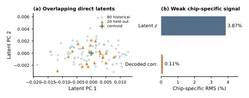
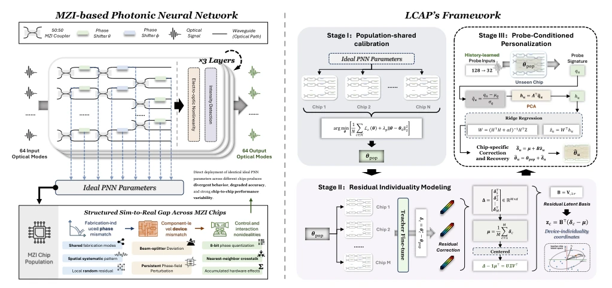
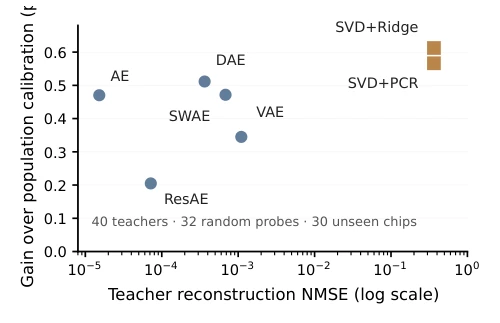

This paper offers a potent remedy for the "sim-to-real" gap in Photonic Neural Networks (PNN), though the prescription is somewhat "sly". The authors keenly observe that directly letting each chip "prove its innocence" (directly encoding probes) is unfeasible, as the population-common mismatch between chips is too dominant, submerging individual differences. LCAP's ingenuity lies in "public before private": first establishing a "population average face" (Population calibration) to resolve 90% of common issues, then using a low-dimensional latent space to infer the remaining 10% of individual differences. This strategy proves effective, lifting the worst-performing chips from 60% to over 90%, essentially a textbook case of "underdogs turning the tables". However, a critique: this method relies heavily on historical chip data (80 chips!). If the manufacturing process of new chips undergoes sudden changes, or if historical data is not sufficiently "competitive", this "empiricism" may backfire. Furthermore, it is essentially a "guessing game", inferring high-dimensional parameters using 32 probes; although effective, the theoretical interpretability remains somewhat vague, as "being able to guess correctly" does not equate to "understanding the principle".
Although Photonic Neural Networks (PNN) offer high energy efficiency, physical deviations during the manufacturing process (such as phase shift, crosstalk) cause simulation models to fail on hardware, creating the "sim-to-real" gap. More problematic is that even with identical designs, deviations vary across different chips, preventing the reuse of calibration experience. Existing methods are mainly categorized into two types: first, fine-tuning for single devices (e.g., L2ight, DAT, meta-learning [7, 8, 9, 10]), which is effective but requires re-optimization for each deployment, incurring high costs; second, pursuing general robustness (e.g., Transferable Learning, SAT [11, 12]), but often ignoring individual differences, resulting in a limited accuracy ceiling. The authors discovered that directly attempting to encode probe responses as hardware latent variables (Latent) to infer correction amounts is unfeasible. As shown in Figure 1, in this end-to-end approach, chip-specific signals account for only 3.87% of the latent variable RMS, completely obscured by population-common errors, leading to "identifiability" issues. Therefore, there is an urgent need for a new paradigm that can reuse population calibration experience while capturing individual differences at low cost.

Fig. 1. Motivating diagnostic for direct latent adaptation. Relative chip-specific RMS measures the deviation from the population mean normalized by the total RMS. In an early encoder–decoder prototype, chip-specific variation accounts for only 3.87% of the latent RMS and 0.11% of the decoded- correction RMS, suggesting that population-common struc- ture can dominate direct end-to-end representations.
LCAP proposes a "public before private" hierarchical adaptation framework, with the core idea of decomposing hardware adaptation into transferable population calibration and probe-inferred individual latentization. The pipeline is divided into three stages: 1. Population-shared calibration: Utilizing 80 historical chip data, optimize a global parameter vector θ_pop. This step imposes no dimensionality limits, aiming to capture manufacturing deviation patterns common to all chips, serving as an anchor for subsequent calibration. 2. Residual latent device space: Based on θ_pop, fine-tune 40 "teacher chips" to obtain individual parameters θ*_c, calculating the residual δ_c = θ*_c - θ_pop. Perform dimensionality reduction on the residual matrix via SVD, extracting the first r singular vectors to form the latent basis B, compressing each chip's individual difference into low-dimensional coordinates z_c. This step models only the "remaining" individual differences, rather than full parameters. 3. Probe-conditioned latent inference: When deploying new chips, no optimization is required; simply measure the output residuals of 32 fixed probes to construct a hardware signature q_u. Obtain features h_u via PCA dimensionality reduction, then utilize the ridge regression mapping W trained on historical data to directly infer the new chip's latent coordinates ẑ_u, thereby reconstructing the residual correction amount δ̂_u = μ + Bẑ_u. The final parameters are θ̂_u = θ_pop + δ̂_u. The entire process requires no labels or backpropagation optimization for the target chip, completing personalized adaptation solely through forward computation.

Fig. 2. LCAP learns a population anchor, models residual device individuality, and infers an unseen chip’s correction from fixed probes without target-device optimization.
Experiments were conducted on a 64-mode MZI Photonic Neural Network for MNIST classification, simulating real non-ideal conditions such as phase deviation, beam splitter error, 8-bit quantization, and crosstalk. Baselines included direct deployment of ideal parameters, population calibration only, and various autoencoder variants (AE, DAE, VAE, etc.). Main results show: direct deployment accuracy was only 80.41%, with the worst-performing chip at 60.21%; after introducing population calibration, average accuracy surged to 92.69%, with the worst-performing chip reaching 89.18%; LCAP further utilized 32 probes, lifting average accuracy to 93.36%, with the worst-performing chip reaching 90.54%, and 27/30 new chips showed improvement. Ablation experiments indicate that latent space rank r=16 yielded the best results, suggesting higher is not necessarily better; increasing the number of probes can enhance performance. The key finding is that high-fidelity reconstruction (e.g., AE's NMSE is extremely low) does not equate to deployment utility; although the linear residual space has lower reconstruction accuracy, it preserves predictable individual directions, making it superior in generalization.

Fig. 3. Reconstruction fidelity does not imply deployment utility. Under the same 40-teacher, 32-probe, 30-chip pro- tocol, autoencoder representations reconstruct historical cor- rections more accurately, whereas the rank-16 linear residual space yields larger unseen-chip adaptation gains.